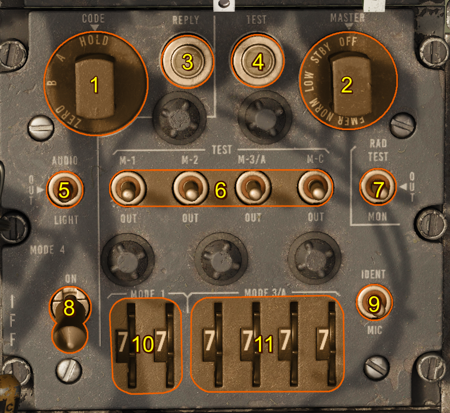

AN/APX-72 IFF AIMS System
Introduction
The AIMS system, which utilizes an AN/APX-72 receiver/transmitter (transponder), is used to automatically identify the airplane in response to coded interrogations. Depending on the interrogation mode, the reply is transmitted in modes 1, 2, 3/A, 4, or airplane altitude reporting in mode C.
Note
Due to engine limitations, the settings on the panel have no effect for DCS. However, they are exposed to external tools, such as SRS.
Controls

- Mode 4 Function Switch
- Master Switch
- Reply Light
- Test Light
- Mode 4 Indication Switch
- Mode Selection Switches
- Monitor-Radiation Test Switch
- Mode 4 Selector Switch
- Identification Switch
- Mode 1 Code Selectors
- Mode 3/A Code Selectors
Mode 4 Function Switch
The mode 4 CODE selector has the following positions: A and B to select either code A or code B;a HOLD position to provide a means of retaining the mode 4 code for an additional flight (unless intentionally retained, the code is automatically returned to zero when power is removed after landing); and a ZERO position to enable manually zeroizing the mode 4 code. The mode 4 code selector knob must be pulled out to be moved to ZERO.
Master Switch
The rotary type master switch is moved from OFF to STDBY to turn the system on; NORM or LOW position selects receiver sensitivity; and the EMER position activates emergency operation. The master switch knob must be pulled out to be moved to EMER.
Reply Light
The mode 4 REPLY light (green) comes on when the receiver/transmitter responds properly to a mode 4 interrogation.
Test Light
A green TEST light illuminates to indicate proper operation of each tested mode during the self-test. The test light also comes on when the (radiation) monitor switch is placed at MON (monitor) if the transponder replies properly to interrogations in modes 1, 2, 3/A, or C.
Mode 4 Indication Switch
The audio/light switch has been moved from OFF to AUDIO or LIGHT. (There is no audio signal provided in the present circuit.)
Mode Selection Switches
The mode selection switches M-1, M-2, M-3/A, and M-C, have a forward momentary TEST position, a center ON position, and an aft OUT position. Holding each mode selection switch at TEST initiates a self-test of each respective mode provided the airborne test set is installed.
Monitor-Radiation Test Switch
The RAD TEST position is utilized by maintenance personnel during ground checks and should be set to OFF in flight.
Mode 4 Selector Switch
Mode 4 is selected by placing the mode 4 enable switch from OUT to ON. Mode 4 codes are preset in the mode 4 computer prior to the mission by the use of a code changer key.
Identification Switch
The identifier switch enables transmission of identification of position (I/P) signals in response to interrogations in modes 1, 2, or 3/A, for 15 to 30 seconds. Transmission of I/P signals can be accomplished in three ways: when the switch is momentarily placed at IDENT, or when the switch is at MIC and either the microphone button is momentarily pressed, or the command radio tone button is pressed (while the command radio is on).
Mode 1 Code Selectors
The two mode 1 selectors provide 32 possible code selections.
Mode 3/A Code Selectors
The four mode 3/A selectors provide for 4096 code selections.